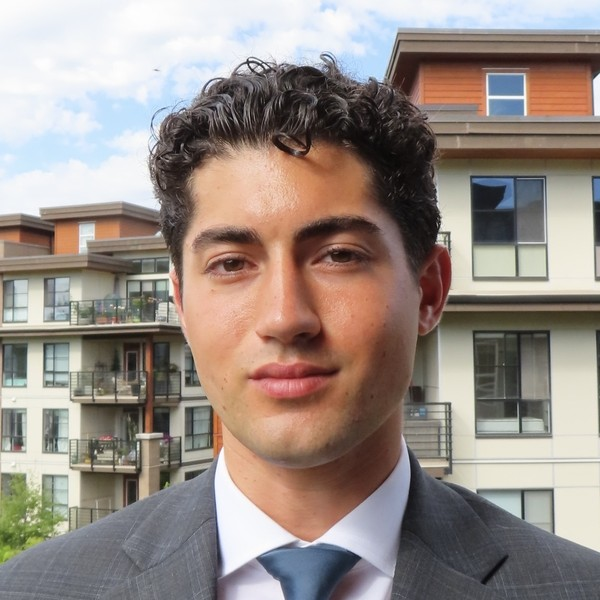

Third-year finance student at UBC Sauder, currently on exchange at HEC Paris. I'm building toward a career in European finance, with a focus on sales and trading.
Explore HEC ParisI'm completing a Bachelor of Commerce at the UBC Sauder School of Business with a Finance specialization. Outside the classroom I'm a CFA Level I candidate and hold the Bloomberg Market Concepts certification.
I'm a member of CFAC Portfolio Management and the UBC Trading Group, and I'm currently recruiting for sales and trading roles across Europe.
My roots are split between Vancouver and Croatia, and this semester I'm studying at HEC Paris (August 2026 to January 2027) before returning to Vancouver to finish my degree in December 2027.
I speak English, Croatian and French (B2), and I went through French immersion from elementary school to the end of high school.
I'm a competitive water polo player and have represented Canada at the national level. I've also played in Croatia with VK Trpanj.
Away from the pool I like fitness, style and travel. This page is my first website, built from scratch with HTML and CSS in the Le Wagon web development course at HEC.